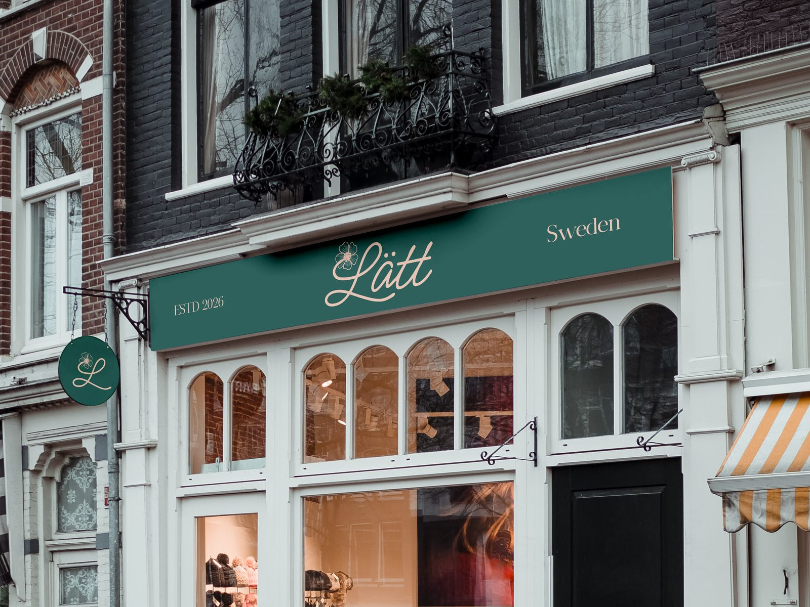
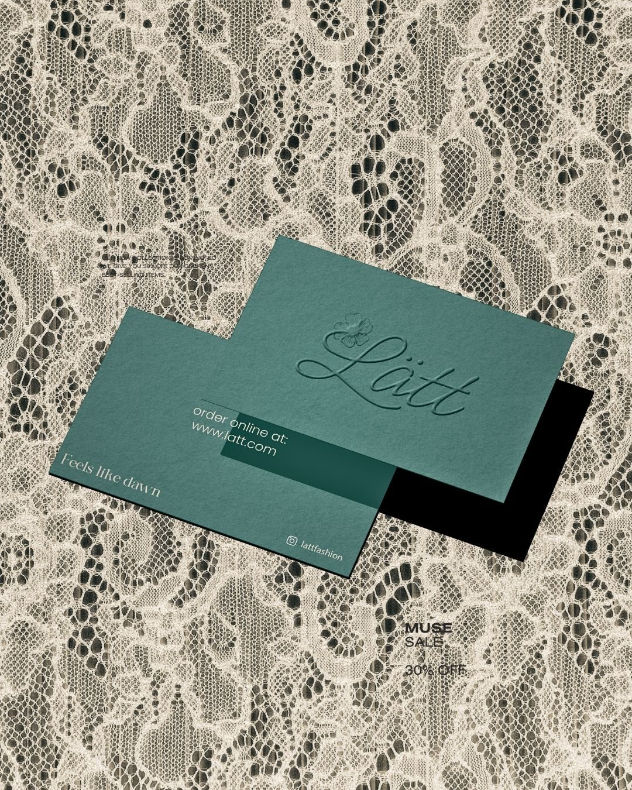
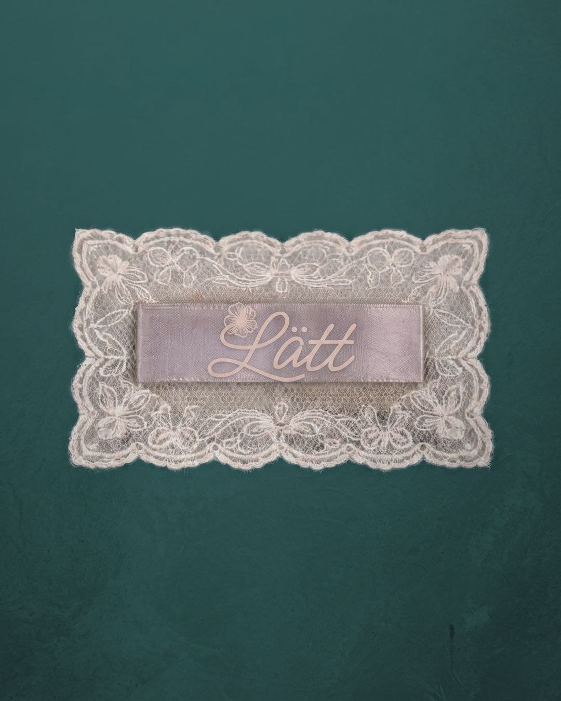
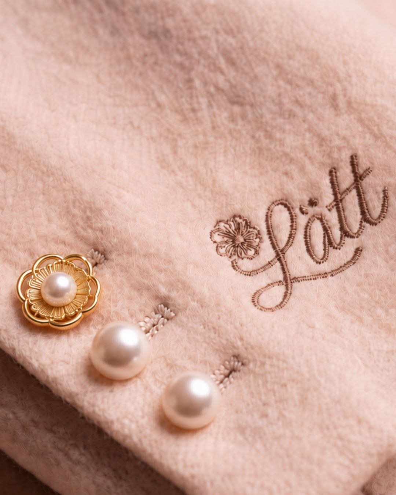
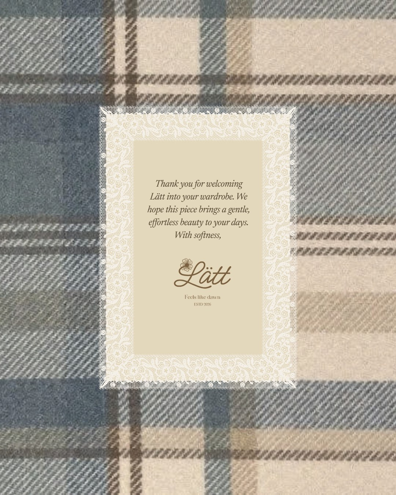
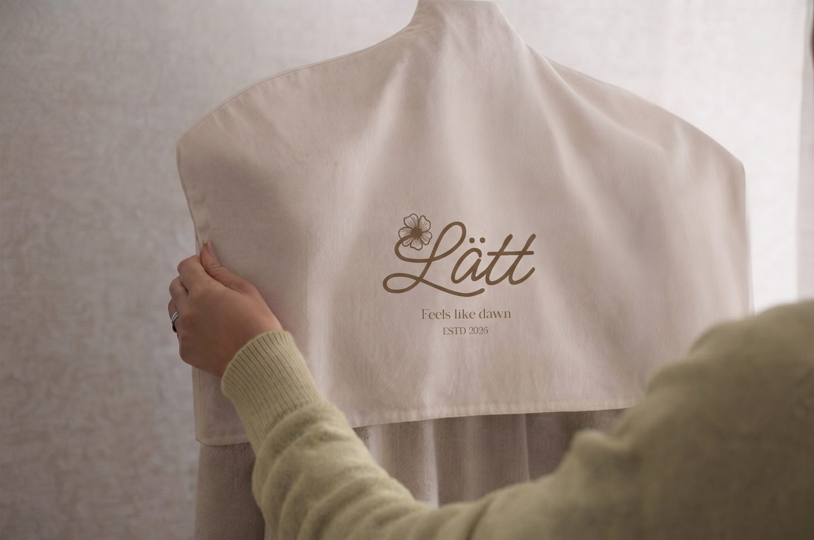
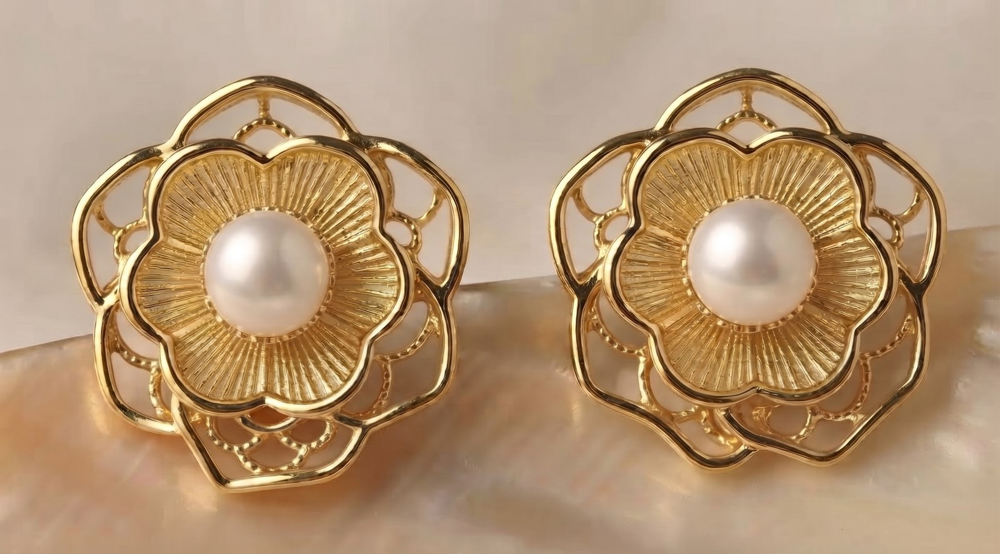
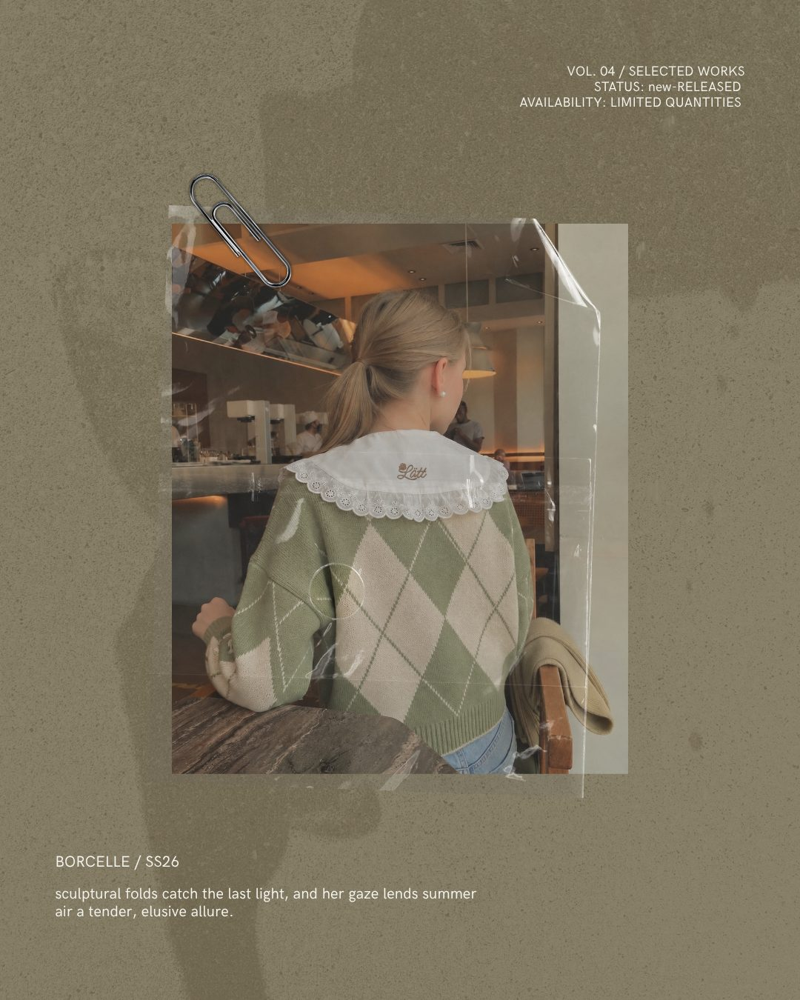
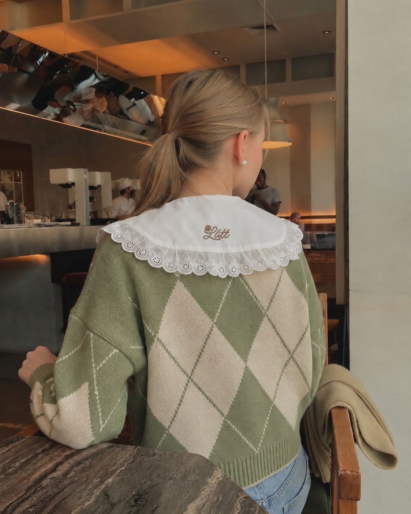
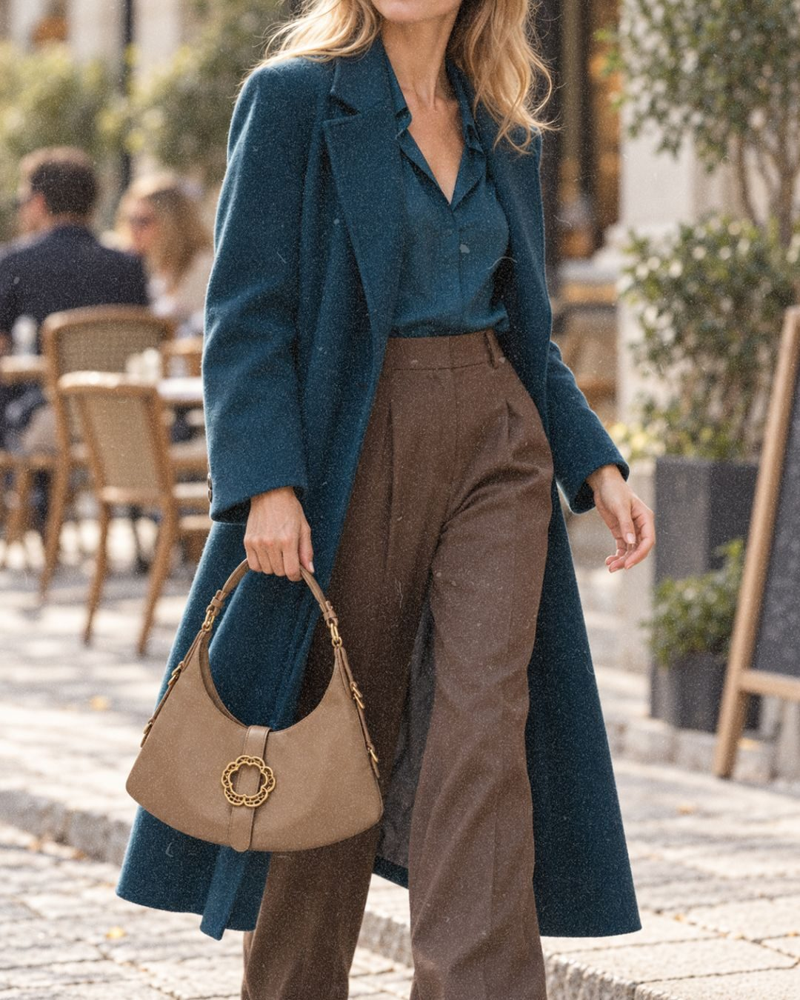

Lätt
Lätt is a Scandi fashion label that brings a light and romantic touch to modern tailoring. With delicate sheer knits and soft structured suiting, the label creates relaxed wardrobe staples designed for everyday luxury.
- Industry
- Fashion label
- Scope
- Logo suite · Labels & tags · Packaging · Campaign

Modern tailoring and workwear often feel stiff, heavy or corporate, lacking the gentle, romantic fluidity that women look for in daily luxury.
Everyday staples that offer a refined, premium silhouette without losing a delicate, tactile and airy feel can be hard to find.
Lätt bridges classic structure and ease. A flowing script logo with a single line-drawn flower sets the tone, and shortens to an L lettermark for hangers, buttons and jewellery.
Tactile finishes carry the idea through: embroidery on a wool cuff, lace-edged labels, scalloped swing tags and harlequin-pattern packaging tied with a bow.

















Have a business you are dreaming up? Let's bring it to life.
Tell me a little about what you are building. I read every message myself and will reply with the next steps.